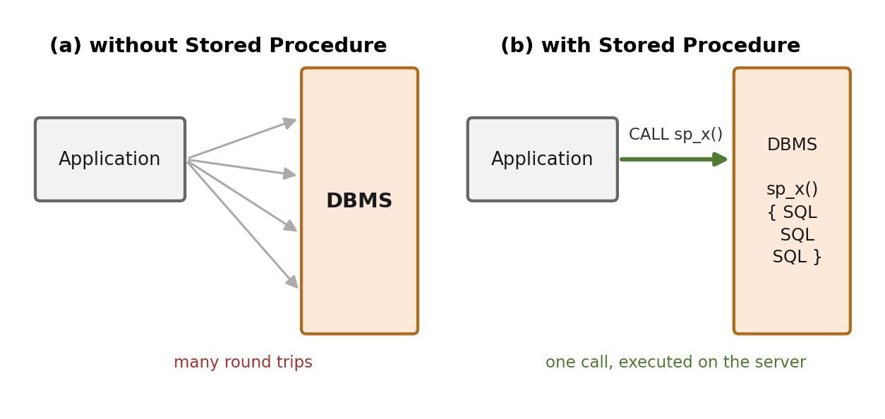

บทที่ 11 · สโตร์โพรซีเยอร์และฟังก์ชัน (Stored Procedure & Function)
การสร้างและเรียกใช้สโตร์โพรซีเยอร์ พารามิเตอร์ IN/OUT/INOUT ตัวแปร คำสั่งควบคุม เคอร์เซอร์ การจัดการข้อผิดพลาดและทรานแซกชัน และฟังก์ชันที่ผู้ใช้สร้างขึ้น
- อธิบายแนวคิดและข้อดีของสโตร์โพรซีเยอร์ได้
- สร้างและเรียกใช้โพรซีเยอร์ที่มีพารามิเตอร์ IN / OUT / INOUT ได้
- ใช้ตัวแปร IF / CASE / WHILE และเคอร์เซอร์ในโพรซีเยอร์ได้
- จัดการข้อผิดพลาดด้วย HANDLER และ SIGNAL ร่วมกับทรานแซกชันได้
- สร้างฟังก์ชันและเรียกใช้ใน SELECT ได้ และเลือกใช้โพรซีเยอร์หรือฟังก์ชันได้เหมาะสม
11.1 สโตร์โพรซีเยอร์ (Stored Procedure)
ชุดคำสั่ง SQL ที่จัดเก็บในฐานข้อมูล เรียกใช้ด้วยชื่อและส่งพารามิเตอร์ได้

| ข้อดี | คำอธิบาย |
|---|---|
| ลดการรับส่งข้อมูล | ส่งแค่ชื่อและพารามิเตอร์ |
| ทำงานเร็วขึ้น | วางแผนการทำงานไว้ล่วงหน้า |
| รวมตรรกะไว้ที่เดียว | หลายโปรแกรมเรียกใช้ตรรกะเดียวกัน |
| เพิ่มความปลอดภัย | ให้สิทธิ์ EXECUTE โดยไม่ต้องให้สิทธิ์ตาราง |
11.2 การสร้างและเรียกใช้สโตร์โพรซีเยอร์
ภายในมี ; คั่นหลายคำสั่ง จึงต้องเปลี่ยนตัวคั่นชั่วคราวด้วย DELIMITER (ใน DBeaver ให้รันทั้งบล็อกด้วย Alt+X)
DELIMITER $$
CREATE PROCEDURE sp_list_student_by_major (IN p_major VARCHAR(20))
BEGIN
SELECT stdid, name, gpa
FROM student
WHERE major = p_major
ORDER BY gpa DESC;
END $$
DELIMITER ;CALL sp_list_student_by_major('CS');| stdid | name | gpa |
|---|---|---|
| 60004 | Sendoh | 3.98 |
| 60001 | Rukawa | 3.75 |
| 60013 | Gon | 2.78 |
| 70036 | Sanji | 2.78 |
| 60003 | Mitsui | 2.00 |
| 60012 | Hisoka | 2.00 |
| 60002 | Sakuragi | NULL |
11.3 ชนิดของพารามิเตอร์ IN / OUT / INOUT
| ชนิด | ทิศทาง | การใช้งาน |
|---|---|---|
| IN (ค่าปริยาย) | ส่งเข้า | เงื่อนไข เช่น รหัสนิสิต |
| OUT | ส่งกลับออกมา | ผลที่คำนวณ เช่น หน่วยกิตรวม |
| INOUT | ส่งเข้าและส่งกลับ | ค่าที่ปรับแล้วคืนค่าใหม่ |
DELIMITER $$
CREATE PROCEDURE sp_count_credit (
IN p_sid VARCHAR(10),
OUT p_credit INT
)
BEGIN
SELECT IFNULL(SUM(sub.credit), 0) INTO p_credit
FROM enroll e
INNER JOIN section sec ON e.secid = sec.secid
INNER JOIN subject sub ON sec.subid = sub.subid
WHERE e.stdid = p_sid;
END $$
DELIMITER ;CALL sp_count_credit('60001', @total);
SELECT @total AS total_credit;| total_credit |
|---|
| 31 |
INOUT — ส่งค่าเข้าไป ให้โพรซีเยอร์ปรับ แล้วรับค่าใหม่กลับออกมาทางตัวแปรเดิม
DELIMITER $$
CREATE PROCEDURE sp_apply_raise (IN p_percent INT, INOUT p_salary INT)
BEGIN
SET p_salary = p_salary + ROUND(p_salary * p_percent / 100);
END $$
DELIMITER ;SET @s = 40000; CALL sp_apply_raise(10, @s); CALL sp_apply_raise(10, @s); SELECT @s AS salary_after_two_raises;
| salary_after_two_raises |
|---|
| 48400 |
@ชื่อ คือ User Variable อยู่ได้ตลอด session ใช้รับค่า OUT/INOUT จากภายนอก ส่วน DECLARE คือ Local Variable อยู่ได้เฉพาะภายใน BEGIN … END ของโพรซีเยอร์
11.4 ตัวแปรและคำสั่งควบคุม (IF, CASE, WHILE)
DELIMITER $$
CREATE PROCEDURE sp_adjust_salary (IN p_lecid VARCHAR(10))
BEGIN
DECLARE v_salary INT DEFAULT 0;
DECLARE v_section INT DEFAULT 0;
SELECT salary INTO v_salary FROM lecturer WHERE lecid = p_lecid;
SELECT COUNT(*) INTO v_section FROM section WHERE lecid = p_lecid;
IF v_salary IS NULL THEN
SELECT 'ยังไม่มีข้อมูลเงินเดือน' AS message;
ELSEIF v_section >= 5 THEN
UPDATE lecturer SET salary = v_salary + 5000 WHERE lecid = p_lecid;
SELECT CONCAT('ปรับขึ้น 5000 บาท จำนวนกลุ่มเรียน ', v_section) AS message;
ELSE
UPDATE lecturer SET salary = v_salary + 1000 WHERE lecid = p_lecid;
SELECT CONCAT('ปรับขึ้น 1000 บาท จำนวนกลุ่มเรียน ', v_section) AS message;
END IF;
END $$
DELIMITER ;CALL sp_adjust_salary('t01');| message |
|---|
| ปรับขึ้น 5000 บาท จำนวนกลุ่มเรียน 14 |
CALL sp_adjust_salary('t11');| message |
|---|
| ยังไม่มีข้อมูลเงินเดือน |
DELIMITER $$
CREATE PROCEDURE sp_generate_test_student (IN p_count INT)
BEGIN
DECLARE i INT DEFAULT 1;
WHILE i <= p_count DO
INSERT INTO student (stdid, name, major, gpa)
VALUES (CONCAT('99', LPAD(i, 3, '0')), CONCAT('Test', i), 'CS', 2.00);
SET i = i + 1;
END WHILE;
END $$
DELIMITER ;CALL sp_generate_test_student(3); SELECT * FROM student WHERE stdid LIKE '99%';
| stdid | name | major | gpa | birthday |
|---|---|---|---|---|
| 99001 | Test1 | CS | 2.00 | NULL |
| 99002 | Test2 | CS | 2.00 | NULL |
| 99003 | Test3 | CS | 2.00 | NULL |
11.5 เคอร์เซอร์ (Cursor)
อ่านผลลัพธ์ทีละแถว — ช้ากว่าคำสั่ง SQL ชุดเดียวมาก ใช้เมื่อจำเป็นเท่านั้น
DELIMITER $$
CREATE PROCEDURE sp_report_low_gpa ()
BEGIN
DECLARE done INT DEFAULT 0;
DECLARE v_sid VARCHAR(10);
DECLARE v_name VARCHAR(50);
DECLARE v_gpa DECIMAL(3,2);
DECLARE cur CURSOR FOR
SELECT stdid, name, gpa FROM student WHERE gpa < 2.00;
DECLARE CONTINUE HANDLER FOR NOT FOUND SET done = 1;
CREATE TEMPORARY TABLE IF NOT EXISTS tmp_warn (
stdid VARCHAR(10), name VARCHAR(50), note VARCHAR(100));
OPEN cur;
read_loop: LOOP
FETCH cur INTO v_sid, v_name, v_gpa;
IF done = 1 THEN
LEAVE read_loop;
END IF;
INSERT INTO tmp_warn VALUES (v_sid, v_name,
CONCAT('เกรดเฉลี่ย ', v_gpa, ' ต่ำกว่าเกณฑ์'));
END LOOP;
CLOSE cur;
SELECT * FROM tmp_warn;
END $$
DELIMITER ;tmp_warn เป็นตารางชั่วคราว (Temporary Table) — ใช้งานได้เหมือนตารางปกติ แต่มองเห็นได้เฉพาะ session (connection) ที่สร้างมันเท่านั้น และ MySQL จะลบทิ้งให้เองเมื่อปิด connection จึงเหมาะกับการพักผลลัพธ์ระหว่างทำงานในโพรซีเยอร์
CALL sp_report_low_gpa();
| stdid | name | note |
|---|---|---|
| 60006 | Nobita | เกรดเฉลี่ย 1.55 ต่ำกว่าเกณฑ์ |
| 60010 | Gon | เกรดเฉลี่ย 1.55 ต่ำกว่าเกณฑ์ |
| 60016 | Mello | เกรดเฉลี่ย 1.55 ต่ำกว่าเกณฑ์ |
| 70034 | Luffy | เกรดเฉลี่ย 1.55 ต่ำกว่าเกณฑ์ |
ตัวอย่างข้างบนเขียนได้ในคำสั่งเดียว: SELECT stdid, name, CONCAT('เกรดเฉลี่ย ', gpa, ' ต่ำกว่าเกณฑ์') FROM student WHERE gpa < 2.00; — ใช้เคอร์เซอร์เป็นทางเลือกสุดท้าย
SHOW PROCEDURE STATUS WHERE Db = DATABASE();
| Db | Name | Type | Language | Definer | Modified | Created | Security_type | Comment | character_set_client | collation_connection | Database Collation |
|---|---|---|---|---|---|---|---|---|---|---|---|
| std_66011200 | sp_adjust_salary | PROCEDURE | SQL | root@localhost | 2026-10-04 14:59:31 | 2026-10-04 14:59:31 | DEFINER | utf8mb4 | utf8mb4_unicode_ci | utf8mb4_unicode_ci | |
| std_66011200 | sp_apply_raise | PROCEDURE | SQL | root@localhost | 2026-10-04 14:59:31 | 2026-10-04 14:59:31 | DEFINER | utf8mb4 | utf8mb4_unicode_ci | utf8mb4_unicode_ci | |
| std_66011200 | sp_count_credit | PROCEDURE | SQL | root@localhost | 2026-10-04 14:59:31 | 2026-10-04 14:59:31 | DEFINER | utf8mb4 | utf8mb4_unicode_ci | utf8mb4_unicode_ci | |
| std_66011200 | sp_generate_test_student | PROCEDURE | SQL | root@localhost | 2026-10-04 14:59:31 | 2026-10-04 14:59:31 | DEFINER | utf8mb4 | utf8mb4_unicode_ci | utf8mb4_unicode_ci | |
| std_66011200 | sp_list_student_by_major | PROCEDURE | SQL | root@localhost | 2026-10-04 14:59:31 | 2026-10-04 14:59:31 | DEFINER | utf8mb4 | utf8mb4_unicode_ci | utf8mb4_unicode_ci | |
| std_66011200 | sp_report_low_gpa | PROCEDURE | SQL | root@localhost | 2026-10-04 14:59:31 | 2026-10-04 14:59:31 | DEFINER | utf8mb4 | utf8mb4_unicode_ci | utf8mb4_unicode_ci |
SHOW CREATE PROCEDURE sp_count_credit; -- ดูโค้ด DROP PROCEDURE IF EXISTS sp_count_credit; -- ลบ (แก้โค้ดต้อง DROP แล้ว CREATE ใหม่)
จงเขียนโพรซีเยอร์ sp_student_transcript(p_sid) แสดงภาคเรียน ชื่อวิชา หน่วยกิต เกรด ของนิสิตที่ระบุ แล้วเรียกใช้กับนิสิต 60007
DELIMITER $$
CREATE PROCEDURE sp_student_transcript (IN p_sid VARCHAR(10))
BEGIN
SELECT sec.term, sub.subid, sub.name, sub.credit, e.grade
FROM enroll e
INNER JOIN section sec ON e.secid = sec.secid
INNER JOIN subject sub ON sec.subid = sub.subid
WHERE e.stdid = p_sid
ORDER BY sec.term;
END $$
DELIMITER ;
CALL sp_student_transcript('60007');| term | subid | name | credit | grade |
|---|---|---|---|---|
| 2023-2 | CS002 | Java | 3 | A |
| 2023-2 | CS003 | Web Design | 2 | A |
| 2023-3 | CS004 | Database | 3 | B |
| 2024-2 | CS005 | Graphics | 3 | C |
| 2024-2 | MA002 | Discrete Math | 4 | A |
| 2024-3 | CS009 | Project | 6 | B |
| 2025-2 | CS009 | Project | 6 | A |
จงเขียนโพรซีเยอร์รับรหัสอาจารย์และภาคเรียน แล้วส่งจำนวนกลุ่มเรียนกลับผ่าน OUT — ทดสอบกับ t01 ภาค 2024-2
DELIMITER $$
CREATE PROCEDURE sp_count_section (IN p_lecid VARCHAR(10), IN p_term VARCHAR(6),
OUT p_n INT)
BEGIN
SELECT COUNT(*) INTO p_n
FROM section
WHERE lecid = p_lecid AND term = p_term;
END $$
DELIMITER ;
CALL sp_count_section('t01', '2024-2', @n);
SELECT @n AS n_section;| n_section |
|---|
| 3 |
11.6 การจัดการข้อผิดพลาดและทรานแซกชันในโพรซีเยอร์
โพรซีเยอร์ที่ทำหลายขั้นตอนต้อง (1) ตรวจเงื่อนไขก่อนบันทึก แล้วแจ้งข้อผิดพลาดที่เข้าใจง่ายด้วย SIGNAL และ (2) ย้อนกลับทั้งหมดเมื่อขั้นใดล้มเหลว ด้วย HANDLER + ทรานแซกชัน (บทที่ 9)
| คำสั่ง | หน้าที่ |
|---|---|
SIGNAL SQLSTATE '45000' SET MESSAGE_TEXT = '…' | สร้าง error ของเราเอง (45000 = error ที่ผู้ใช้กำหนด) |
DECLARE EXIT HANDLER FOR SQLEXCEPTION BEGIN … END | เมื่อเกิด error ใด ๆ ให้ทำคำสั่งใน BEGIN…END แล้วออกจากโพรซีเยอร์ |
DECLARE CONTINUE HANDLER FOR NOT FOUND … | เมื่อไม่พบข้อมูล (เช่น เคอร์เซอร์อ่านหมด) ให้ทำงานต่อ |
RESIGNAL | ส่ง error เดิมต่อออกไปให้ผู้เรียก (หลัง ROLLBACK แล้ว) |
ตัวอย่างที่ 11.6 — sp_enroll: ลงทะเบียนพร้อมตรวจเงื่อนไข
กฎ: (1) นิสิตและกลุ่มเรียนต้องมีอยู่จริง (2) ห้ามลงซ้ำ (3) ถ้าวิชามีวิชาบังคับก่อน ต้องเคยผ่านวิชานั้น (เกรด A–D)
DELIMITER $$
CREATE PROCEDURE sp_enroll (IN p_sid VARCHAR(10), IN p_secid INT)
BEGIN
DECLARE v_pre VARCHAR(10);
IF NOT EXISTS (SELECT 1 FROM student WHERE stdid = p_sid) THEN
SIGNAL SQLSTATE '45000' SET MESSAGE_TEXT = 'ไม่พบรหัสนิสิต';
END IF;
IF NOT EXISTS (SELECT 1 FROM section WHERE secid = p_secid) THEN
SIGNAL SQLSTATE '45000' SET MESSAGE_TEXT = 'ไม่พบกลุ่มเรียน';
END IF;
IF EXISTS (SELECT 1 FROM enroll WHERE secid = p_secid AND stdid = p_sid) THEN
SIGNAL SQLSTATE '45000' SET MESSAGE_TEXT = 'ลงทะเบียนกลุ่มนี้ไปแล้ว';
END IF;
SELECT sub.pre INTO v_pre
FROM section sec JOIN subject sub ON sec.subid = sub.subid
WHERE sec.secid = p_secid;
IF v_pre IS NOT NULL AND NOT EXISTS (
SELECT 1 FROM enroll e JOIN section s ON e.secid = s.secid
WHERE e.stdid = p_sid AND s.subid = v_pre
AND e.grade IN ('A', 'B', 'C', 'D')) THEN
SIGNAL SQLSTATE '45000' SET MESSAGE_TEXT = 'ยังไม่ผ่านวิชาบังคับก่อน';
END IF;
INSERT INTO enroll (secid, stdid) VALUES (p_secid, p_sid);
SELECT CONCAT('ลงทะเบียน ', p_sid, ' ในกลุ่ม ', p_secid, ' สำเร็จ') AS message;
END $$
DELIMITER ;CALL sp_enroll('60004', 52);| message |
|---|
| ลงทะเบียน 60004 ในกลุ่ม 52 สำเร็จ |
CALL sp_enroll('60004', 52);CALL sp_enroll('60015', 52);CALL sp_enroll('99999', 52);ตัวอย่างที่ 11.7 — sp_move_section: ทรานแซกชัน + EXIT HANDLER
ย้ายนิสิตจากกลุ่มหนึ่งไปอีกกลุ่ม (ลบ + เพิ่ม) — ถ้าขั้นใดล้มเหลว HANDLER จะ ROLLBACK ทั้งหมด ข้อมูลไม่ค้างครึ่งทาง
DELIMITER $$
CREATE PROCEDURE sp_move_section (IN p_sid VARCHAR(10), IN p_from INT, IN p_to INT)
BEGIN
DECLARE EXIT HANDLER FOR SQLEXCEPTION
BEGIN
ROLLBACK; -- ยกเลิกทุกอย่างที่ทำไปในทรานแซกชันนี้
RESIGNAL; -- ส่ง error เดิมกลับไปให้ผู้เรียกเห็น
END;
START TRANSACTION;
DELETE FROM enroll WHERE secid = p_from AND stdid = p_sid;
INSERT INTO enroll (secid, stdid) VALUES (p_to, p_sid);
COMMIT;
SELECT CONCAT('ย้าย ', p_sid, ' จากกลุ่ม ', p_from, ' ไปกลุ่ม ', p_to, ' สำเร็จ') AS message;
END $$
DELIMITER ;CALL sp_move_section('60008', 51, 999);SELECT * FROM enroll WHERE stdid = '60008' AND secid IN (51, 999);
| secid | stdid | grade |
|---|---|---|
| 51 | 60008 | NULL |
CALL sp_move_section('60008', 51, 44);
SELECT * FROM enroll WHERE stdid = '60008' AND secid IN (51, 44);| secid | stdid | grade |
|---|---|---|
| 44 | 60008 | NULL |
จงเขียนโพรซีเยอร์ sp_drop_enroll(p_sid, p_secid) ถอนรายวิชา โดยอนุญาตเฉพาะรายการที่ยังไม่มีเกรด ถ้ามีเกรดแล้วหรือไม่พบรายการ ให้แจ้ง error
DELIMITER $$
CREATE PROCEDURE sp_drop_enroll (IN p_sid VARCHAR(10), IN p_secid INT)
BEGIN
DECLARE v_grade CHAR(1);
DECLARE v_found INT DEFAULT 0;
SELECT COUNT(*), MAX(grade) INTO v_found, v_grade
FROM enroll WHERE secid = p_secid AND stdid = p_sid;
IF v_found = 0 THEN
SIGNAL SQLSTATE '45000' SET MESSAGE_TEXT = 'ไม่พบรายการลงทะเบียน';
ELSEIF v_grade IS NOT NULL THEN
SIGNAL SQLSTATE '45000' SET MESSAGE_TEXT = 'มีเกรดแล้ว ถอนไม่ได้';
END IF;
DELETE FROM enroll WHERE secid = p_secid AND stdid = p_sid;
SELECT 'ถอนรายวิชาสำเร็จ' AS message;
END $$
DELIMITER ;CALL sp_drop_enroll('60001', 1);CALL sp_drop_enroll('70034', 51);| message |
|---|
| ถอนรายวิชาสำเร็จ |
11.7 ฟังก์ชันที่ผู้ใช้สร้างขึ้น (Stored Function)
คล้ายโพรซีเยอร์ แต่คืนค่าเดียวเสมอ และเรียกใช้ใน SELECT ได้เหมือนฟังก์ชันมาตรฐาน
DELIMITER $$
CREATE FUNCTION fn_grade_point (p_grade CHAR(1))
RETURNS DECIMAL(3,2)
DETERMINISTIC
BEGIN
RETURN CASE p_grade
WHEN 'A' THEN 4.00
WHEN 'B' THEN 3.00
WHEN 'C' THEN 2.00
WHEN 'D' THEN 1.00
ELSE 0.00
END;
END $$
DELIMITER ;SELECT stdid, grade, fn_grade_point(grade) AS point FROM enroll WHERE secid = 1;
| stdid | grade | point |
|---|---|---|
| 60001 | A | 4.00 |
| 60002 | B | 3.00 |
| 60005 | C | 2.00 |
| 60006 | F | 0.00 |
| 60010 | F | 0.00 |
MySQL 8 ที่เปิด binary log ต้องระบุลักษณะของฟังก์ชัน — DETERMINISTIC (ใส่ค่าเดิมได้ผลเดิมเสมอ) หรือ READS SQL DATA (อ่านข้อมูลจากตาราง) ไม่เช่นนั้นจะได้ Error 1418
| ประเด็น | Stored Procedure | Function |
|---|---|---|
| เรียกใช้ | CALL | ในนิพจน์ เช่น SELECT, WHERE |
| ค่าที่คืน | หลายค่าผ่าน OUT / ชุดผลลัพธ์ | ค่าเดียวเสมอ |
| แก้ไขข้อมูล | ทำได้ | จำกัด ไม่แนะนำ |
| ใช้ใน SELECT | ไม่ได้ | ได้ |
จงเขียนฟังก์ชัน fn_student_gpa(p_sid) คืนค่าเกรดเฉลี่ยถ่วงน้ำหนักด้วยหน่วยกิต (ไม่นับวิชาที่ยังไม่มีเกรด) แล้วใช้แสดงนิสิตทุกคนเทียบกับคอลัมน์ gpa
DELIMITER $$
CREATE FUNCTION fn_student_gpa (p_sid VARCHAR(10))
RETURNS DECIMAL(3,2)
READS SQL DATA
BEGIN
DECLARE v_gpa DECIMAL(3,2);
SELECT SUM(sub.credit * fn_grade_point(e.grade)) / SUM(sub.credit) INTO v_gpa
FROM enroll e
INNER JOIN section sec ON e.secid = sec.secid
INNER JOIN subject sub ON sec.subid = sub.subid
WHERE e.stdid = p_sid AND e.grade IS NOT NULL;
RETURN v_gpa;
END $$
DELIMITER ;
SELECT stdid, name, gpa AS gpa_in_table, fn_student_gpa(stdid) AS gpa_calc
FROM student
ORDER BY stdid;| stdid | name | gpa_in_table | gpa_calc |
|---|---|---|---|
| 60001 | Rukawa | 3.75 | 3.48 |
| 60002 | Sakuragi | NULL | 2.84 |
| 60003 | Mitsui | 2.00 | 2.00 |
| 60004 | Sendoh | 3.98 | 3.38 |
| 60005 | NULL | 2.78 | 2.96 |
| 60006 | Nobita | 1.55 | 0.65 |
| 60007 | L | 3.98 | 3.44 |
| 60008 | Kira | 3.05 | 0.00 |
| 60009 | Killua | 3.98 | 3.14 |
| 60010 | Gon | 1.55 | 1.33 |
| 60011 | Kurapika | 3.98 | 3.20 |
| 60012 | Hisoka | 2.00 | 3.50 |
| 60013 | Gon | 2.78 | 2.47 |
| 60014 | Light | 2.55 | NULL |
| 60015 | Near | 4.00 | NULL |
| 60016 | Mello | 1.55 | NULL |
| 70022 | NULL | NULL | 2.10 |
| 70033 | Zoro | 3.98 | NULL |
| 70034 | Luffy | 1.55 | 0.60 |
| 70035 | Nami | 2.85 | NULL |
| 70036 | Sanji | 2.78 | 2.00 |
| 70037 | Chopper | NULL | 2.00 |
| 99001 | Test1 | 2.00 | NULL |
| 99002 | Test2 | 2.00 | NULL |
| 99003 | Test3 | 2.00 | NULL |
นิสิตที่ไม่เคยลงหรือยังไม่มีเกรด ได้ NULL เพราะ SUM ของชุดว่างเป็น NULL
คำถามท้ายบท
- Stored Procedure
- เขียนโพรซีเยอร์ sp_student_transcript(p_sid) แสดงเทอม ชื่อวิชา หน่วยกิต เกรด ของนิสิตที่ระบุ (IN parameter)
ดูเฉลยแบบฝึกหัดที่ 11.1 — โพรซีเยอร์ถูกสร้างไว้แล้ว เรียกใช้กับนิสิตคนอื่นได้ทันที
เฉลยCALL sp_student_transcript('60001');▸ ผลลัพธ์ (9 แถว)term subid name credit grade 2023-1 CS001 Programming 3 A 2023-1 CS004 Database 3 C 2023-2 CS002 Java 3 B 2023-3 CS004 Database 3 A 2023-3 CS008 AI 3 A 2024-2 CS001 Programming 3 A 2024-2 MA002 Discrete Math 4 B 2024-3 CS009 Project 6 A 2025-3 CS010 Security 3 B - เขียนโพรซีเยอร์ sp_count_section(p_lecid, p_term, OUT p_n) แล้วเรียกใช้กับ t01 เทอม 2024-2 (OUT + @ตัวแปร)
ดูเฉลยแบบฝึกหัดที่ 11.2 — ค่า OUT ต้องรับด้วยตัวแปรผู้ใช้ (ขึ้นต้นด้วย @) แล้ว SELECT ออกมาดู
เฉลยCALL sp_count_section('t01', '2024-2', @n); SELECT @n AS n_section;▸ ผลลัพธ์ (1 แถว)n_section 3 - เขียนโพรซีเยอร์ sp_raise_salary(p_major, p_percent) ขึ้นเงินเดือนอาจารย์ในสาขาที่ระบุตามร้อยละที่ระบุ แล้วแสดงผลหลังปรับ (UPDATE ใน procedure)เฉลย
DELIMITER $$ CREATE PROCEDURE sp_raise_salary (IN p_major VARCHAR(30), IN p_percent DECIMAL(5,2)) BEGIN UPDATE lecturer SET salary = salary * (1 + p_percent / 100) WHERE major = p_major; SELECT lecid, name, major, salary FROM lecturer WHERE major = p_major; END $$ DELIMITER ;เฉลยCALL sp_raise_salary('English', 5);▸ ผลลัพธ์ (4 แถว)lecid name major salary t06 Goku English 21000 t07 Vegeta English 26250 t08 Cell English 73500 t09 Frieza English 63000 - เขียนโพรซีเยอร์ sp_enroll(p_sid, p_secid) ที่ตรวจว่าเคยผ่านวิชาบังคับก่อน (เกรดไม่ใช่ F) แล้วจึงบันทึก มิฉะนั้นแจ้ง error (IF NOT EXISTS … SIGNAL)
ดูตัวอย่างที่ 11.6 — หัวใจคือหา pre ของวิชาในกลุ่มเรียน แล้วตรวจด้วย
NOT EXISTSว่ามีการลงวิชา pre ที่ได้เกรด A–D (เกรด NULL = ยังไม่ผ่าน จึงต้องระบุ IN ('A','B','C','D') แทน<> 'F') ถ้าไม่มีให้ SIGNALเฉลยSELECT sub.pre INTO v_pre FROM section sec JOIN subject sub ON sec.subid = sub.subid WHERE sec.secid = p_secid; IF v_pre IS NOT NULL AND NOT EXISTS ( SELECT 1 FROM enroll e JOIN section s ON e.secid = s.secid WHERE e.stdid = p_sid AND s.subid = v_pre AND e.grade IN ('A', 'B', 'C', 'D')) THEN SIGNAL SQLSTATE '45000' SET MESSAGE_TEXT = 'ยังไม่ผ่านวิชาบังคับก่อน'; END IF;เฉลยCALL sp_enroll('60015', 52);✖ Error Code: 1644. ยังไม่ผ่านวิชาบังคับก่อน - เขียนโพรซีเยอร์ที่ใช้ WHILE สร้างกลุ่มเรียนวิชาที่ระบุให้อาจารย์ที่ระบุ ทุกเทอม (1, 2, 3) ของปีที่ระบุ (WHILE i <= 3)เฉลย
DELIMITER $$ CREATE PROCEDURE sp_open_all_terms (IN p_subid VARCHAR(10), IN p_lecid VARCHAR(10), IN p_year INT) BEGIN DECLARE i INT DEFAULT 1; WHILE i <= 3 DO INSERT INTO section (subid, lecid, term) VALUES (p_subid, p_lecid, CONCAT(p_year, '-', i)); SET i = i + 1; END WHILE; END $$ DELIMITER ;เฉลยCALL sp_open_all_terms('CS001', 't01', 2027);✔ Query OK · 0 row(s) affected▸ ข้อมูลหลังรันคำสั่ง (3 แถว)secid subid lecid term 53 CS001 t01 2027-1 54 CS001 t01 2027-2 55 CS001 t01 2027-3 - เขียนโพรซีเยอร์ย้ายกลุ่มเรียนของนิสิตเป็นทรานแซกชัน ถ้าเกิดข้อผิดพลาดให้ ROLLBACK อัตโนมัติ (DECLARE EXIT HANDLER FOR SQLEXCEPTION)
ดูตัวอย่างที่ 11.7 (sp_move_section) — ประกาศ
DECLARE EXIT HANDLER FOR SQLEXCEPTION BEGIN ROLLBACK; RESIGNAL; END;ก่อน แล้วทำSTART TRANSACTION→ DELETE จากกลุ่มเดิม → INSERT กลุ่มใหม่ → COMMIT ถ้าขั้นใดเกิด error HANDLER จะ ROLLBACK ทั้งหมดและส่ง error ต่อให้ผู้เรียกย้ายไปกลุ่มที่ไม่มีอยู่ → error และ ROLLBACK (นิสิตยังอยู่กลุ่มเดิม)CALL sp_move_section('60009', 20, 999);✖ Error Code: 1452. Cannot add or update a child row: a foreign key constraint fails (`std_66011200`.`enroll`, CONSTRAINT `enroll_fk_sec` FOREIGN KEY (`secid`) REFERENCES `section` (`secid`) ON DELETE CASCADE)เฉลยSELECT * FROM enroll WHERE stdid = '60009' AND secid = 20;
▸ ผลลัพธ์ (1 แถว)secid stdid grade 20 60009 C - อธิบายเหตุผลที่ควรคิดแบบ Set-based ก่อนใช้ Cursor และเขียน sp_report_low_gpa ใหม่โดยไม่ใช้ Cursor (SELECT เดียว)
SQL ถูกออกแบบให้ประมวลผลทั้งชุดข้อมูลในคำสั่งเดียว DBMS จึงเลือกวิธีที่เร็วที่สุดได้ (ใช้ดัชนี ทำงานขนาน) ส่วน Cursor อ่านและประมวลผลทีละแถว มีโค้ดมาก ช้ากว่ามากเมื่อข้อมูลเยอะ และเกิดข้อผิดพลาดได้ง่ายกว่า — ใช้ Cursor เฉพาะงานที่ทำแบบชุดไม่ได้จริง ๆ
เฉลยDELIMITER $$ CREATE PROCEDURE sp_report_low_gpa_set () BEGIN SELECT stdid, name, CONCAT('เกรดเฉลี่ย ', gpa, ' ต่ำกว่าเกณฑ์') AS note FROM student WHERE gpa < 2.00; END $$ DELIMITER ;เฉลยCALL sp_report_low_gpa_set();
▸ ผลลัพธ์ (4 แถว)stdid name note 60006 Nobita เกรดเฉลี่ย 1.55 ต่ำกว่าเกณฑ์ 60010 Gon เกรดเฉลี่ย 1.55 ต่ำกว่าเกณฑ์ 60016 Mello เกรดเฉลี่ย 1.55 ต่ำกว่าเกณฑ์ 70034 Luffy เกรดเฉลี่ย 1.55 ต่ำกว่าเกณฑ์ - Stored Function
- เขียนฟังก์ชัน fn_age(p_birthday) คืนค่าอายุ แล้วใช้แสดงอายุนิสิตทุกคน (DETERMINISTIC? CURDATE())
ฟังก์ชันนี้ ไม่ใช่ DETERMINISTIC — ค่าวันเกิดเดิมให้ผลต่างกันเมื่อวันที่เปลี่ยน (ขึ้นกับ CURDATE()) จึงประกาศ
NOT DETERMINISTICและNO SQL(ไม่ได้อ่านตาราง)เฉลยDELIMITER $$ CREATE FUNCTION fn_age (p_birthday DATE) RETURNS INT NOT DETERMINISTIC NO SQL BEGIN RETURN TIMESTAMPDIFF(YEAR, p_birthday, CURDATE()); END $$ DELIMITER ; SELECT stdid, name, birthday, fn_age(birthday) AS age FROM student;▸ ผลลัพธ์ (แสดง 8 จาก 25 แถว)stdid name birthday age 60001 Rukawa 2010-05-13 16 60002 Sakuragi 2010-01-15 16 60003 Mitsui 2013-06-25 13 60004 Sendoh 2012-12-08 13 60005 NULL 2011-09-02 15 60006 Nobita NULL NULL 60007 L 2011-01-31 15 60008 Kira 2015-02-25 11 - เขียนฟังก์ชัน fn_student_gpa(p_sid) คืนค่าเกรดเฉลี่ยถ่วงน้ำหนัก แล้วเปรียบเทียบกับคอลัมน์ gpa ในตาราง (READS SQL DATA)
ดูเฉลยแบบฝึกหัดที่ 11.4 — ฟังก์ชันอ่านตาราง enroll/section/subject จึงประกาศ
READS SQL DATAเฉลยSELECT stdid, name, gpa AS stored_gpa, fn_student_gpa(stdid) AS calc_gpa, ROUND(gpa - fn_student_gpa(stdid), 2) AS diff FROM student WHERE stdid IN (SELECT stdid FROM enroll WHERE grade IS NOT NULL) ORDER BY stdid;▸ ผลลัพธ์ (แสดง 8 จาก 17 แถว)stdid name stored_gpa calc_gpa diff 60001 Rukawa 3.75 3.48 0.27 60002 Sakuragi NULL 2.84 NULL 60003 Mitsui 2.00 2.00 0.00 60004 Sendoh 3.98 3.38 0.60 60005 NULL 2.78 2.96 -0.18 60006 Nobita 1.55 0.65 0.90 60007 L 3.98 3.44 0.54 60008 Kira 3.05 0.00 3.05 - เขียนฟังก์ชัน fn_section_count(p_lecid) คืนจำนวนกลุ่มที่อาจารย์สอน แล้วใช้ใน WHERE เพื่อหาอาจารย์ที่สอนมากกว่า 5 กลุ่ม (ใช้ฟังก์ชันใน WHERE)เฉลย
DELIMITER $$ CREATE FUNCTION fn_section_count (p_lecid VARCHAR(10)) RETURNS INT READS SQL DATA BEGIN DECLARE v_n INT; SELECT COUNT(*) INTO v_n FROM section WHERE lecid = p_lecid; RETURN v_n; END $$ DELIMITER ; SELECT lecid, name, fn_section_count(lecid) AS n_section FROM lecturer WHERE fn_section_count(lecid) > 5;▸ ผลลัพธ์ (4 แถว)lecid name n_section t01 Peter Parker 14 t02 Steve Roger 11 t03 Yoda 8 t05 IronMan 6 ใช้งานง่ายและอ่านเข้าใจ แต่ฟังก์ชันถูกเรียกทุกแถว — ถ้าข้อมูลมาก การเขียนด้วย GROUP BY … HAVING จะเร็วกว่า
- เปรียบเทียบ Stored Procedure, Function และวิว ในแง่การเรียกใช้ พารามิเตอร์ ค่าที่คืน และงานที่เหมาะสม (บทที่ 7 และ 11)
- Stored Procedure — เรียกด้วย
CALL· พารามิเตอร์ IN / OUT / INOUT · คืนผลลัพธ์ได้หลายชุดหรือไม่คืนเลย · เหมาะกับงานหลายขั้นตอนที่แก้ไขข้อมูล มีเงื่อนไข และทรานแซกชัน (ลงทะเบียน ย้ายกลุ่ม) - Stored Function — เรียกในนิพจน์ SQL (SELECT / WHERE) · พารามิเตอร์ IN อย่างเดียว · คืนค่าเดียวเสมอ · เหมาะกับการคำนวณที่ใช้ซ้ำ (อายุ เกรดเฉลี่ย) ไม่ควรแก้ไขข้อมูล
- วิว — ใช้แทนตารางใน FROM · ไม่มีพารามิเตอร์ (กรองด้วย WHERE ตอนเรียก) · คืนเป็นตาราง · เหมาะกับการซ่อน JOIN/สรุปข้อมูลที่ใช้บ่อย และควบคุมสิทธิ์การมองเห็น
- Stored Procedure — เรียกด้วย